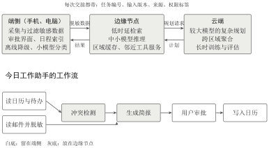

7.11 前沿专题：端边云协同的 Agent 工作流
一个 Agent 的各个步骤不一定都在同一台机器上运行：手机或工业终端掌握用户的现场数据，边缘节点提供邻近的计算，云端承载较大的模型和全局服务。把第 7.10 节的工作流分布到这些位置后，问题就不只是“模型能否回答”，还包括哪一步在哪里执行、要搬运多少上下文、网络中断后怎样恢复、能否赶上时限。本节先把 Agent 任务写成工作流图，再讨论端、边、云的分工，辨析三种常被混淆的缓存，并用一道例题估算同一步骤放在端侧和边缘的耗时。结论是：协同的对象是一整条会检索、推理、调用工具、等待审批的工作流，调度要同时考虑依赖、上下文、时限、可靠性和授权。
7.11.1 用工作流图描述 Agent 任务
把一次任务表示成有向无环图（Directed Acyclic Graph，DAG）\(G=(\mathcal{S},\mathcal{E})\)：节点 \(v\in\mathcal{S}\) 是一个步骤（检索、模型推理、工具调用、运行测试、人工审批），边 \((u,v)\in\mathcal{E}\) 表示 \(v\) 要用到 \(u\) 的输出。真实的 Agent 会动态生成新步骤、重试旧步骤，所以 DAG 通常只描述当前已知的一段工作流，运行时还要随时更新图和剩余预算。每个节点记录：所需模型、输入输出大小、计算量、隐私等级、截止时间、失败后能否安全重试。
调度器要为每个步骤 \(v\) 在候选节点 \(n\)（端、边或云）中选一个位置，并估计总时间 \(T(v,n)\)——排队、模型装载、上下文传输、推理、工具执行、结果返回之和；还要估计显存、能耗、费用和失败概率。前驱步骤没完成，后继不能启动；需要特定凭据或本地硬件的工具，只能在获得授权的节点上运行。一个教学化的目标可以写成 \[\begin{aligned} \min\;\; & T_{\text{完成}} + \lambda\cdot\text{能耗} + \mu\cdot\text{费用} \\ \text{受限于}\;\; & \text{时限、显存、节点能力、可靠性、数据驻留、授权}, \end{aligned} \tag{7-2}\] 其中权重 \(\lambda\)、\(\mu\) 表示业务上的取舍。截止时间和隐私若是硬约束，就不能用较低的成本去“抵消”违反它们。可靠性也不能只看节点的平均可用率：串行链路中任何一步失败都可能让整条工作流失败（例 7-3），并行备份（把同一步骤同时放到多个节点、取最先成功的结果）能提高完成概率，却增加成本；可重试的步骤还要为恢复预留时间。DARCS（Deadline- and Reliability-Constrained Scheduling，时限与可靠性约束的调度）研究的正是异构边缘服务器上的并发 Agent 工作流 DAG：在每条工作流的时限、硬件可靠性和 GPU 显存约束下，决定接纳哪些工作流、怎样调度[30]。它给出的是特定模型和实验条件下的方法，不能直接当成所有 Agent 的通用调度器。
7.11.2 端、边、云怎样分工
端侧（手机、电脑、终端设备）适合采集和初步过滤敏感数据、保存用户授权、执行低成本的分类和离线降级；边缘节点（靠近用户网络的服务器）适合低时延检索、中小模型推理、区域缓存和邻近的工具服务；云端适合较大的模型、跨区域的聚合和长时间的训练与评估。实际分工取决于硬件、网络、数据驻留和质量要求，而不是固定的“轻任务在端、重任务在云”：一段含个人邮件正文的上下文即使很短，也可能因隐私约束不能上传；一段公开代码即使很长，也可能更适合放到有大显存的云端。

图 7-11 端边云的分工（上）与今日工作助手工作流的放置（下）。灰底步骤放在边缘节点，白底步骤留在端侧：邮件正文先在端侧脱敏，审批与写入始终在端侧完成；云端只在需要复杂规划时参与
对今日工作助手（图 7-11），端侧保管审批界面、日程索引和邮件正文；边缘节点处理已脱敏的冲突检测和简报生成；云端只在确有需要时处理复杂规划。任何跨节点的交接都要带上任务编号、输入版本、来源和权限标签；下游不能因为收到了上游 Agent 的结果，就自动继承它的凭据。边缘节点断线时，循环可以重试幂等的读取、改用端侧的降级方案，或者暂停需要真实写入的步骤。
7.11.3 三种缓存不要混为一谈
边云协同中的“缓存”至少有三种，优化的对象完全不同（表 7-20）。
表 7-20 模型缓存、前缀（KV）缓存与 Agent 记忆
| 对比项 | 模型缓存 | 前缀（KV）缓存 | Agent 记忆 |
|---|---|---|---|
| 保存什么 | 模型权重或可直接加载的模型文件 | 推理时已处理 token 的注意力键值 | 任务事实、经验、用户偏好 |
| 所在层次 | 节点的存储与显存 | 推理引擎内部 | Agent 的外部存储 |
| 节省什么 | 下载和装载模型的时间 | 重复前缀的预填充计算 | 重复探索，跨会话恢复 |
| 有效条件 | 节点上有这个模型 | 模型版本相同，且提示的开头逐 token 一致 | 检索命中，且经过筛选与授权 |
| 代价与限制 | 占存储和显存，需决定替换哪个 | 占显存，随上下文长度和并发数增长 | 可能过时或被污染，需复核 |
由表可见：“记住了一次对话”（Agent 记忆）不等于“已有 KV 缓存”；模型权重已经缓存在边缘节点，也不能免去上下文的传输。前缀缓存的“开头一致”条件，正是 MCP 2026-07-28 版建议服务器按确定顺序返回工具列表的理由之一，规范原文就写明这是为了提高提示缓存的命中率（第 7.6.2 小节）：工具描述放在提示开头，顺序一变，后面的缓存全部失效。
两篇研究给出了缓存与调度联合优化的思路。Cached Model-as-a-Resource 把空天地一体化网络中的缓存模型视为与通信、计算、存储并列的资源，联合优化模型缓存与推理，并提出“思维时效”（age of thought）指标，衡量推理所依据内容的新鲜程度[31]。Serving Long-Context LLMs at the Mobile Edge 关注多轮交互中不断变长的上下文，用测试期强化学习联合决定模型缓存和推理卸载[32]。两者都表明：长上下文工作流的代价随轮次变化，不能只用首轮请求的长度决定部署位置。
7.11.4 端侧推理加速怎样影响调度
端侧模型受内存容量、功耗和散热的约束。第 4 章介绍的推理优化手段（第 4.4.3 小节）在这里各自作用于不同阶段：量化减少权重占用和部分计算，但要检查任务质量是否退化；批处理把多个请求合并执行以提高设备吞吐，但请求要等待凑批，单个交互可能等得更久；前缀缓存减少重复提示的预填充；KV 缓存管理决定长会话能否留在显存里；推测解码先由小模型快速草拟几个 token，再由大模型一次并行验证，草稿被接受的比例（接受率）够高时能减少大模型逐个生成的次数、降低延迟。收益要用端到端延迟、任务正确率、峰值内存和能耗衡量，而不只看每秒生成多少 token。
调度时要把预填充（一次性处理全部输入，主要受算力限制）和逐 token 解码（每生成一个 token 都要读一遍权重，主要受带宽限制）分开估计：长上下文使预填充时间和 KV 占用上升，长输出增加解码时间；冷启动时，模型装载和网络传输格外显著。只按参数量选节点，可能把被低估的长上下文任务送到显存不足的边缘服务器上。
例 7-5 同一步骤放在端侧还是边缘
今日工作助手的“生成简报”一步：输入 4000 token，输出 300 token，使用 80 亿参数（8B，B 表示 billion，十亿）、4 位量化的模型。比较放在手机上和放在边缘服务器上的耗时。硬件参数为便于计算而假设：手机内存带宽 60 GB/s、NPU 有效算力 \(5\times10^{12}\) FLOP/s；边缘 GPU 显存带宽 1 TB/s、有效算力 \(1\times10^{14}\) FLOP/s；上行网速 20 Mbit/s，往返时延 0.1 s。GB 按 \(10^{9}\) 字节、TB 按 \(10^{12}\) 字节计。
| 步骤 | 算什么 | 算式 | 结果 | 这个数从哪来 |
|---|---|---|---|---|
| 1 | 权重字节数 | \(8\times10^{9}\times4\div8\) | \(4\times10^{9}\) B | 参数量 × 每参数 4 位 ÷ 8，式 （4-1） |
| 2 | 预填充计算量 | \(2\times8\times10^{9}\times4\,000\) | \(6.4\times10^{13}\) FLOP | 每 token 前向约 \(2N\) 次运算（第 4.1.2 小节） |
| 3 | 手机预填充 | \(6.4\times10^{13}\div(5\times10^{12})\) | 12.8 s | 步骤 2 ÷ 手机算力 |
| 4 | 手机解码速度上限 | \((60\times10^{9})\div(4\times10^{9})\) | 15 token/s | 带宽 ÷ 权重字节（第 4.4.1 小节） |
| 5 | 手机解码 300 token | \(300\div15\) | 20 s | 步骤 4 |
| 6 | 手机合计 | \(12.8+20\) | 32.8 s | 步骤 3、5 |
| 7 | 边缘预填充 | \(6.4\times10^{13}\div(1\times10^{14})\) | 0.64 s | 步骤 2 ÷ 边缘算力 |
| 8 | 边缘解码 | \(300\div\bigl((1\times10^{12})\div(4\times10^{9})\bigr)\) | 1.2 s | 速度上限 250 token/s |
| 9 | 上传 4000 token 文本 | \((16\times10^{3}\times8)\div(20\times10^{6})\) | \(\approx0.006\,\text{s}\) | 每 token 约 4 字节（假设） |
| 10 | 边缘合计 | \(0.64+1.2+0.006+0.1\) | \(\approx1.95\,\text{s}\) | 步骤 7～9 加往返时延 |
| 11 | 若需上传 20 MB 附件 | \((20\times10^{6}\times8)\div(20\times10^{6})\) | 8 s | 附件与文本一起上传，边缘合计变为 \(1.95+8\approx9.95\,\text{s}\) |
数据流向：输入 → （端侧）预填充 + 解码；或 → 上传 → （边缘）预填充 + 解码 → 回传结果。
结论：纯文本时，边缘约 1.95 s，手机约 32.8 s，差距来自算力（预填充）和带宽（解码）两方面；要传大附件时，传输时间成为主导，边缘的优势缩小到约 3.3 倍（\(32.8\div9.95\approx3.30\)）。但如果这 4000 token 里含有不允许离开设备的邮件正文，无论快慢都只能在端侧处理，或先在端侧脱敏、只上传摘要。时延估算决定“快不快”，数据驻留和授权决定“能不能”。
7.11.5 一个可检验的研究问题
把上面的工作连起来，可以提出一个贴近 Coding Agent 的问题：在会动态生成步骤的 Agent 工作流中，怎样联合决定任务准入、节点分配、模型与上下文缓存和失败恢复，使任务在时限和可靠性要求下完成，同时遵守数据驻留和授权？DARCS 提供了工作流时限与可靠性的视角，Cached Model-as-a-Resource 提供了模型资源配置的视角，移动边缘长上下文的研究提供了上下文演化与卸载的视角。把它们组合起来是本书的研究推论，并不是这几篇论文已经共同解决的问题。
如果要开展研究，可以从第 7.10 节的三类数据任务生成 DAG，给每步标上数据大小、模型要求和隐私标签；构造手机、两台异构边缘服务器和云端的时延、显存与故障轨迹；比较“本地优先”“预计完成时间最短”“只看缓存命中”“联合约束调度”四种策略。报告截止时间满足率、任务成功率、P95 完成时间、能耗、费用、跨节点数据量和隐私违规次数，并区分准入失败与执行中失败；节点或网络故障后，检查任务编号、工具幂等键和上下文版本能否支持安全恢复。
本节要点
把 Agent 任务写成 DAG，调度要同时满足依赖、时限、显存、可靠性、数据驻留和授权。
模型缓存省装载，前缀（KV）缓存省预填充，Agent 记忆省重复检索和试错，三者不能互相替代。
端边分工先看“能不能”（隐私与授权），再看“快不快”（算力、带宽、传输）。